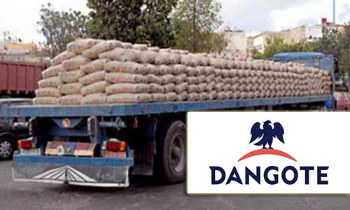
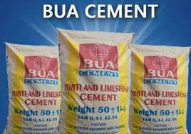
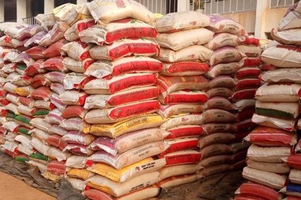
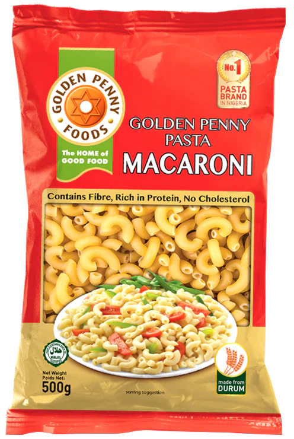
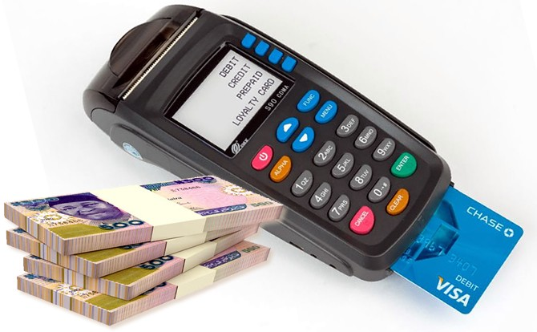
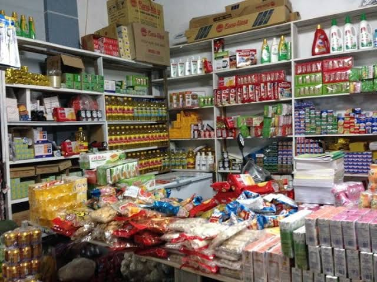

OUR PRODUCTS
Dangote Cement
Known for its strength and durability, Dangote Cement is a top choice for both large-scale construction and individual projects.
BUA Cement
BUA Cement offers high quality and consistency for both commercial and residential construction needs.
Mangal Cement
Mangal Cement is a fast-growing brand, offering reliability and cost-effectiveness for construction.
Rice
We supply premium-quality rice, carefully selected and processed to meet your household and commercial needs.
Spaghetti
Our spaghetti is made from the finest wheat, ensuring a delicious and nutritious meal for your family.

Macaroni
Choose our macaroni for a versatile and tasty meal option. It's perfect for a variety of dishes and quick to prepare.
POS Services
Fast, reliable, and secure POS services to make your transactions easier and more convenient.
Provision Stores
We offer a wide range of provisions to meet your daily needs. From food items to household essentials, we've got you covered.
